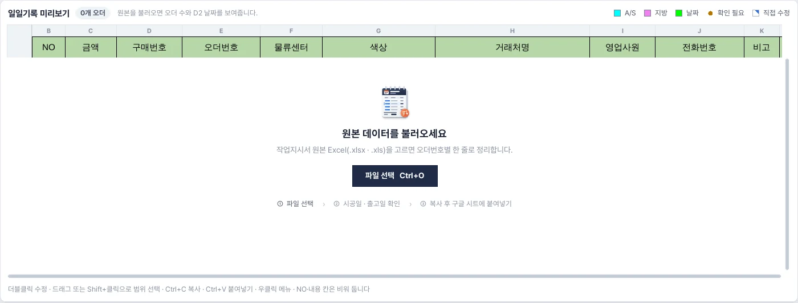
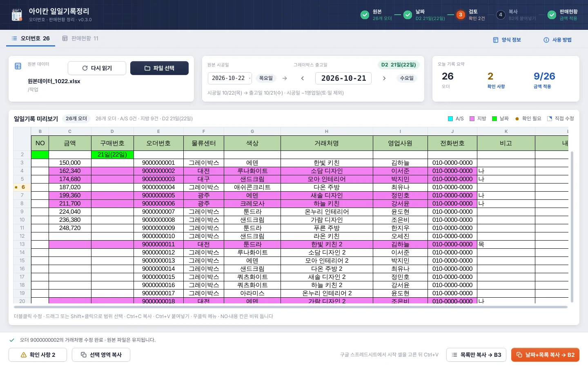
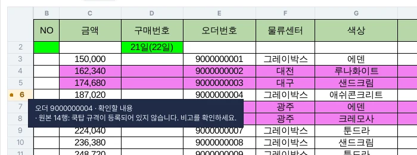
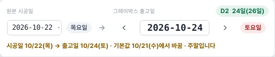
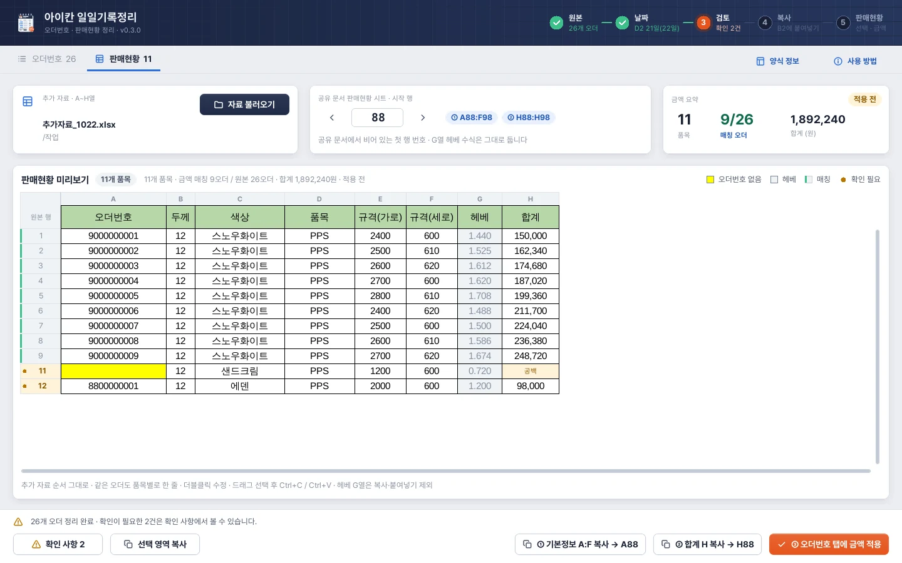
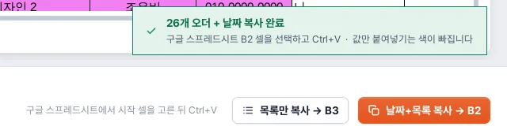
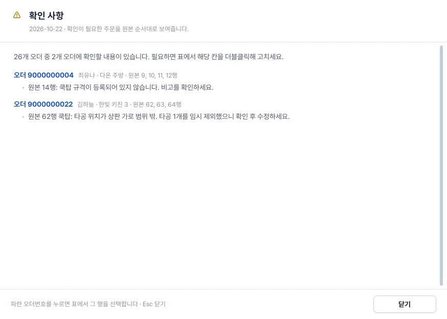

USER MANUAL · 0.6.0
아이칸 일일기록정리
- 기준 버전0.6.0
- 기준일2026-10-29
- 운영체제Windows 10/11 64비트
- 필요.xls를 읽을 때만 Microsoft Excel
0.6.0의 화면과 동작을 기준으로 정리한 사용자 매뉴얼입니다. 처음 사용하는 작업자는 4장 작업 순서부터 따라 해 보세요. 0.3.0 이후 바뀐 점은 21장에 모았습니다.
CHAPTER 01
프로그램의 목적과 사용 범위
아이칸 일일기록정리는 작업지시서 작성에 사용하는 원본 Excel과 별도의 자재·금액 자료를 읽어, 사내 공유 문서에 옮겨 적을 데이터를 정리하는 Windows 프로그램입니다.
| 탭 | 정리 단위 | 결과 |
|---|---|---|
| 오더번호 | 오더번호별 한 행 | NO(작업지시서 번호)·물류센터·재질·거래처·담당·전화·PO번호·금액 등 |
| 판매현황 | 추가 자료의 품목별 한 행 | 오더번호·두께·색상·품목·가로·세로·합계 |
| 재단정보 | 재단할 품목별 한 행(기본은 수량만큼 반복) | NO·W·H 세 열 |
기본 흐름은 자료 불러오기 → 날짜 확인 → 검토·수정 → 복사 → 사용자가 구글 스프레드시트에 붙여넣기입니다. 판매현황 자료가 있으면 오더별 금액을 오더번호 목록에 반영할 수 있고, 완성 작업지시서나 작업지시서 관리자의 작업 데이터에서 작업지시서 번호를 가져와 NO에 연결할 수 있습니다.
작업 결과는 클립보드 복사로 전달합니다. 이어서 작업할 상태는 작업 데이터(.ikandaily)로 직접 저장해 두었다가 다시 열 수 있습니다. 구글 계정에 로그인하거나 공유 문서를 자동으로 갱신하는 기능, 정리 결과를 별도 Excel 파일로 내보내는 기능, 직접 인쇄 기능은 제공하지 않습니다. 인쇄가 필요하면 붙여넣은 구글 스프레드시트나 Excel에서 진행합니다.
작업지시서 관리자·포장 카운트와는 별도로 설치하고 사용하는 프로그램입니다. 관리자의 작업 데이터는 번호를 가져오는 자료로만 읽으며, 이 매뉴얼은 일일기록정리의 기능만 설명합니다.
CHAPTER 02
설치 및 업데이트
2.1 설치 환경
- Windows 64비트 PC에서 설치판을 사용합니다.
- Python을 사용자가 따로 설치할 필요는 없습니다.
.xlsx는 프로그램에서 읽습니다. 구형.xls를 읽을 때는 PC에 설치된 Microsoft Excel을 사용합니다.- 구글 스프레드시트에 붙여넣으려면 사용자가 해당 문서를 열고 편집할 수 있어야 합니다.
2.2 설치 순서
실행 중인 아이칸 일일기록정리를 종료합니다. 이어서 할 작업이 있으면 먼저 작업 데이터로 저장하고, 필요한 결과는 공유 문서에 붙여넣습니다.
IkanDailyRecords_0.6.0.msi를 실행합니다.설치마법사의 안내에 따라 설치를 마칩니다.
아이칸 일일기록정리를 실행하고 화면의 버전 표시를 확인합니다.
새 버전 설치파일로 기존 일일기록정리를 업데이트할 수 있습니다. 작업지시서 관리자나 포장 카운트를 대신 설치하는 파일은 아닙니다. 다른 PC에서 저장한 .ikandaily를 이어서 열려면 그 PC에도 0.6.0 이상이 설치되어 있어야 합니다.
CHAPTER 03
준비할 자료
3.1 첫 번째 자료: 작업지시서 원본 데이터
작업지시서 관리자를 사용할 때 불러오던 출고예시조회 계열의 원본 데이터입니다. 완성 작업지시서 Excel이나 오더차이리스트와 구분해 주세요.
기존 원본 형식은 2행이 항목명, 3행부터 품목 데이터입니다. 주요 위치는 다음과 같습니다.
| 원본 열 | 항목 | 일일기록정리에서 사용하는 내용 |
|---|---|---|
| C | PO번호 | 오더번호 탭의 구매번호 |
| F | 공장출고일 | 시공일로 사용하여 날짜별 목록 구성 |
| G | 오더번호 | 주문을 묶고 금액·번호를 연결하는 기준 |
| I | 물류센터 정보 | 그레이박스 또는 지방명 |
| M | 제품명 | 한글 재질명과 제작 정보 |
| N | 수량 | 원본 품목의 수량. 판매현황이 없을 때 재단정보 수량 반복에 사용 |
| AL | 대리점명 | 거래처명 |
| AM | 영업사원 | 영업사원명 |
| AN | 연락처 | 전화번호 |
| AO 등 가공 관련 열 | 가공정보 및 타공 관련 값 | 지방 비고의 공장 타공 여부 판정에 참조 |
프로그램은 정해진 항목명과 열 위치를 확인합니다. 첫 번째 자료의 열을 임의로 옮기거나 제목 행을 제거하면 정상적으로 읽지 못할 수 있습니다.
3.2 두 번째 자료: 판매현황 추가 자료
판매현황 탭을 사용할 때 준비합니다. 첫 번째 시트에 아래 순서의 A:H열이 있어야 합니다.
| 열 | 내용 | 출력에 사용하는 방식 |
|---|---|---|
| A | 자재명 | 두께·색상·품목·가로·세로 추출 |
| B | 납품처 | 입력 자료의 항목으로 구분 |
| C | 저장소 | 입력 자료의 항목으로 구분 |
| D | 수량 | 판매현황 행은 늘리지 않음. 재단정보 수량 반복에 사용 |
| E | 단위 | 입력 자료의 항목으로 구분 |
| F | 단가 | 합계를 다시 계산하는 기준으로 사용하지 않음 |
| G | 합계 | 판매현황 H열 및 오더별 금액 합산에 사용 |
| H | 오더번호 | 첫 번째 자료의 주문과 매칭 |
첫 행부터 데이터가 있어도 되고, 자재명 / 납품처 / 저장소 / 수량 / 단위 / 단가 / 합계 / 오더번호 제목 행이 있어도 됩니다. 제목 행은 A열이 자재명, H열이 오더번호일 때만 제목으로 알아보고 건너뜁니다. 빈 행은 건너뜁니다.
추가 자료 G열의 합계와, 출력 판매현황 G열의 헤베는 서로 다른 항목입니다. 추가 자료의 합계는 출력 H열로 옮겨집니다.
3.3 PO 상세수집으로 추가 자료 만들기
한샘 SRM의 P/O 참조 납품서 생성 상세 창에서 복사하던 자재명~영업오더 8열은 위 A:H 순서와 같습니다. 브라우저 도구 PO 상세수집을 쓰면 PO를 하나씩 더블클릭하지 않고 한 번에 모을 수 있습니다.
SRM에서 P/O 참조 납품서 생성을 조회하고, 북마크바의 PO 상세수집을 누릅니다.
필요한 PO를 고르고 상세 수집 시작을 누릅니다.
수집 창의 제목 행 포함과 맨 앞에 PO번호 열을 끈 상태로 엑셀용 복사를 누릅니다.
Excel에서 새 통합 문서를 열고 첫 시트의 A1을 선택해 Ctrl+V로 붙여넣습니다.
.xlsx로 저장한 뒤 판매현황 탭의 자료 불러오기에서 이 파일을 고릅니다.
| PO 상세수집 열 | 판매현황 추가 자료 |
|---|---|
| 자재명 | A 자재명 |
| 납품처 · 저장소 | B 납품처 · C 저장소 |
| 수량 · 단위 · 단가 | D 수량 · E 단위 · F 단가 |
| 합계금액 | G 합계 |
| 영업오더 | H 오더번호 (앞 0은 일일기록정리가 정리) |
주의
PO 상세수집의 제목 행은 합계금액 / 영업오더라는 SRM 화면 이름을 씁니다. H열이 오더번호가 아니므로 일일기록정리는 이 줄을 제목으로 알아보지 못하고 자재명 오류로 읽기를 멈춥니다. 제목 행 포함을 켜고 복사했다면 Excel에서 1행을 지우고 저장하세요. PO번호 열을 켜면 열이 한 칸씩 밀려 읽을 수 없습니다.
PO 상세수집의 CSV 저장 파일은 일일기록정리에서 바로 고를 수 없습니다(.xlsx·.xls만 선택). 엑셀용 복사로 .xlsx를 만드세요.
3.4 세 번째 자료: 작업지시서 번호 자료
오더번호 탭의 NO나 재단정보의 NO에 작업지시서 번호를 넣을 때 사용합니다. 세 가지 중 하나를 고릅니다.
| 자료 | 번호를 읽는 위치 | 사용하는 곳 |
|---|---|---|
완성 작업지시서 .xlsx |
각 시트 D6의 오더번호와 K1의 작업지시서 번호 | 오더번호 NO 매칭 · 재단정보 번호 불러오기 |
작업지시서 관리자 작업 데이터 .ikanwork·.아이칸 |
적용된 작성/완성 수정 목록의 오더번호와 K1 | 오더번호 NO 매칭 · 재단정보 번호 불러오기 |
번호 업로드 양식 .xlsx |
번호매칭 시트의 오더번호 / 작업지시서 번호 두 열 |
오더번호 NO 매칭 |
업로드 양식은 매칭 창의 업로드 양식 다운로드로 받습니다(12.3).
3.5 대상 공유 문서
기존 일일기록 양식과 판매현황 양식, 재단정보를 붙여넣을 문서를 구글 스프레드시트 또는 Excel에서 열어 둡니다. 프로그램은 대상 문서의 빈 행을 직접 찾아주지 않으므로, 붙여넣을 위치는 사용자가 확인합니다.
CHAPTER 04
처음 사용하는 분을 위한 작업 순서
4.1 오더번호 목록만 정리할 때

- 1파일 선택누르면 원본 Excel을 고르는 창이 열립니다. Ctrl+O와 같습니다.
- 2세 단계파일 선택 → 시공일 · 출고일 확인 → 복사 후 구글 시트에 붙여넣기.
오더번호 탭의 파일 선택을 누릅니다. Ctrl+O도 사용할 수 있습니다.
작업지시서 원본 Excel을 선택합니다.
원본 시공일을 확인합니다. 날짜가 여러 개라면 작업할 날짜를 선택합니다.
그레이박스 출고일과 D2 미리보기를 확인합니다.
확인 사항을 열어 안내 내용을 검토하고, 필요한 셀을 더블클릭해 수정합니다.
작업지시서 번호가 필요하면 작업지시서 번호 매칭으로 NO를 채웁니다(12장).
날짜+목록 복사 → B2 또는 목록만 복사 → B3을 누릅니다.
대상 공유 문서에서 시작 셀을 선택하고 일반 붙여넣기 Ctrl+V를 실행합니다.
붙여넣은 오더 수·날짜·색상·NO와 긴 글자의 내용을 확인합니다.
4.2 판매현황과 오더별 금액까지 정리할 때
위 순서대로 첫 번째 원본을 불러오고 날짜를 확인합니다.
판매현황 탭으로 이동합니다.
자료 불러오기에서 두 번째 자료를 선택합니다. SRM 자료는 PO 상세수집으로 만들 수 있습니다(3.3).
품목 수·매칭 오더 수·확인 사항·합계를 확인합니다.
공유 문서에서 판매현황을 붙여넣을 첫 행을 확인하고, 프로그램의 시작 행에 입력합니다.
① 기본정보 A:F 복사를 누르고 공유 문서의 해당 A열 셀에 붙여넣습니다.
② 합계 H 복사를 누르고 같은 시작 행의 H열 셀에 붙여넣습니다.
③ 오더번호 탭에 금액 적용을 누릅니다.
오더번호 탭으로 돌아가 금액을 확인합니다.
오더번호 목록을 다시 복사하여 공유 문서에 붙여넣습니다.
예를 들어 시작 행이 88이라면 기본정보는 A88, 합계는 H88에 붙여넣습니다. 두 번의 붙여넣기에서 시작 행이 같아야 합니다.
판매현황을 나중에 수정했다면 금액 적용 → 오더번호 목록 다시 복사 → 공유 문서에 다시 붙여넣기까지 진행해야 변경된 금액이 전달됩니다.
4.3 재단정보와 작업지시서 번호를 정리할 때
첫 번째 원본을 불러옵니다. 판매현황 자료가 있으면 먼저 불러옵니다(재단 목록은 판매현황을 우선 사용합니다).
재단정보 탭(Ctrl+3)으로 이동합니다.
수량만큼 행 반복이 켜져 있는지, 품목·W·H가 맞는지 확인합니다.
번호 불러오기로 완성 작업지시서 또는 관리자 작업 데이터를 고르거나, NO를 직접 입력합니다.
번호 충돌·W/H 공백 등 확인 사항을 해결합니다.
재단정보 복사 → A1을 누르고 공유 문서의 A열 시작 셀에 붙여넣습니다.
같은 번호를 오더번호 탭에도 쓰려면 오더번호 NO에 적용으로 검토 후 반영하고, 오더번호 목록을 다시 복사합니다.
4.4 하루 작업 전체 흐름
오더번호 탭에서 작업지시서 원본 데이터를 읽습니다.
원본 시공일·그레이박스 출고일·D2 표시를 확인하고 필요한 값을 수정합니다.
판매현황 자료가 있으면 불러와 품목·합계를 검토합니다.
판매현황의 시작 행을 정하고 A:F와 H를 나누어 공유 문서에 붙여넣습니다. G열 헤베 수식은 유지합니다.
필요한 오더별 금액을 오더번호 탭에 적용합니다.
재단정보 탭에서 품목·수량 반복·W/H를 확인하고 작업지시서 번호를 연결합니다.
재단정보의 번호를 오더번호 탭에도 쓸 경우 오더번호 NO에 적용으로 검토 후 반영합니다. 또는 오더번호 탭에서 번호 자료를 직접 매칭합니다.
오더번호 목록과 재단정보를 각각 복사하여 대상 공유 문서의 시작 셀에 붙여넣습니다.
이어서 작업할 필요가 있으면 작업 데이터 → 저장(Ctrl+S)으로
.ikandaily를 보관합니다.다음 작업 또는 다른 PC에서는 작업 데이터 열기(Ctrl+Shift+O)로 이어서 진행합니다.
각 복사와 작업 파일 저장은 별도 동작입니다. 어떤 순서로 진행하더라도 최종 공유 문서의 값과 저장 파일이 최신인지 확인합니다.
CHAPTER 05
화면 구성과 표시 읽는 법

- 1단계 표시원본 → 날짜 → 검토 → 복사 → 판매현황 (0.6.0은 → 재단정보까지). 끝난 단계는 초록 체크, 지금 할 단계는 주황 번호. 누르면 그 작업으로 이동합니다.
- 2탭 줄오더번호 · 판매현황 (0.6.0은 재단정보 탭 추가). 옆 숫자는 오더 수 · 품목 수입니다.
- 3양식 정보 · 사용 방법열 배치와 붙여넣기 시작 셀, 프로그램 안 도움말(F1).
- 4원본 데이터불러온 파일 이름과 폴더. 이름에 마우스를 올리면 전체 경로가 보입니다.
- 5다시 읽기 · 파일 선택파일 선택 Ctrl+O, 같은 파일 다시 읽기 F5 (고친 칸과 적용 금액은 원본 값으로 돌아갑니다).
- 6원본 시공일시공일이 여러 개면 여기서 고릅니다. 옆 배지는 요일.
- 7그레이박스 출고일기본값은 시공일 −1영업일(토·일 제외). ‹ › 로 영업일 이동, 직접 입력 후 Enter.
- 8D2 미리보기D2에 들어갈 날짜 · 출고일(다음 영업일).
- 9오늘 기록 요약오더 수 · 확인 사항(누르면 목록) · 금액이 들어간 오더 수(누르면 판매현황).
- 10색 범례A/S 하늘색 · 지방 보라색 · 날짜 연두색 · 확인 필요 · 직접 수정 표시.
- 11날짜 행NO(B2)와 D2만 연두색. 날짜는 위쪽 날짜 카드에서 바꿉니다. 목록 NO에는 작업지시서 번호가 들어갈 수 있습니다(0.5.0부터).
- 12주황 행 번호확인할 내용이 있는 주문. 마우스를 올리면 내용이 보입니다.
- 13파란 표시이번 실행에서 직접 고친 칸(더블클릭 · 붙여넣기).
- 14상태줄불러오기 · 수정 · 복사 · 금액 적용 결과.
- 15확인 사항확인할 주문 수가 함께 표시됩니다.
- 16복사 버튼날짜+목록 → B2, 목록만 → B3. 버튼에 붙여넣을 시작 셀이 적혀 있습니다.
5.1 공통 화면
| 영역 | 설명 |
|---|---|
| 위쪽 남색 단계 표시 | 원본 → 날짜 → 검토 → 복사 → 판매현황 → 재단정보의 진행 상태 안내 |
| 작업 데이터 ▾ | 저장 · 다른 이름으로 저장 · 작업 데이터 열기(16장) |
| 탭 줄 | 오더번호·판매현황·재단정보 전환. 탭 옆 숫자는 오더 수 또는 품목 수 |
| 양식 정보 | 오더번호 양식의 열 배치·날짜·붙여넣기 시작 셀 확인 |
| 사용 방법 | 프로그램 안의 사용 안내. F1로도 열기 |
| 중앙 표 | 정리된 값 검토, 셀 수정, 범위 선택 |
| 아래 상태줄 | 불러오기·검증·복사·금액 적용·저장 결과 안내 |
| 아래 버튼 줄 | 현재 탭에 필요한 버튼 표시 |
| 복사 후 초록 알림 | 복사 성공과 붙여넣을 위치 안내 |
단계 표시는 완료된 단계를 초록 체크, 현재 진행할 단계를 주황색으로 보여줍니다. 각 단계를 누르면 원본 선택·날짜 입력·확인 사항·복사 버튼·판매현황 탭·재단정보 탭으로 이동할 수 있습니다.
단계 표시는 작업을 안내하는 상태 표시입니다. ‘복사 완료’는 클립보드에 결과가 준비되었다는 뜻이며, 구글 스프레드시트에 실제로 붙여넣었는지까지 확인하는 것은 아닙니다. 작업 데이터를 저장했다는 뜻도 아닙니다.
참고
이 매뉴얼의 실제 화면 그림은 0.3.0에서 찍었습니다. 0.6.0에서는 여기에 재단정보 탭·재단정보 단계·작업 데이터 메뉴·작업지시서 번호 매칭 버튼이 더해집니다.
5.2 표의 표시

- 1주황 행 번호확인할 내용이 있는 주문.
- 2내용확인 사항 창과 같은 문장입니다.
| 표시 | 의미 | 복사 결과와의 관계 |
|---|---|---|
| 주황색 행 번호·작은 표시 | 해당 주문 또는 품목에 확인할 내용이 있음 | 화면 안내용 |
| 셀 오른쪽 위 파란 표시 | 현재 작업 중 직접 수정한 칸 | 표시 자체는 화면 안내용 |
| 파란 선택 테두리·강조된 행 번호와 열 글자 | 현재 선택한 셀 범위 | 범위를 정하는 표시 |
| 판매현황 행 번호 왼쪽 초록 막대 | 첫 번째 자료의 오더와 연결되고 해당 품목 합계가 입력됨 | 금액 적용 완료와는 별개 |
| 판매현황 오더번호 셀 노랑 | 오더번호가 비어 있음 | 복사할 때도 노란색 |
| 판매현황 합계의 연한 주황색·‘공백’ 안내 | 합계가 입력되지 않음 | 안내 문구·배경은 화면용이며 복사는 빈 값 |
주황 행 번호에 마우스를 올리면 확인 내용을 볼 수 있습니다. 재단정보에서는 행 번호에 마우스를 올리면 오더번호·품목·원본 행이 보입니다. …로 줄여 보이는 긴 셀도 마우스를 올리면 원문을 확인할 수 있습니다. 화면에서 글자가 줄어 보이더라도 복사 데이터의 원문은 유지됩니다.
창이 좁으면 요일 등 보조 표시 일부가 줄어듭니다. 표가 화면보다 크면 스크롤바 또는 휠을 사용합니다. 범위를 끌어 선택할 때도 이동할 공간이 있는 방향으로만 자동 스크롤합니다.
CHAPTER 06
오더번호 탭 사용법
6.1 원본 데이터 카드
파일 선택으로 새로운 원본을 불러옵니다. 선택한 파일 이름과 폴더가 표시되며, 파일 이름에 마우스를 올려 경로를 확인할 수 있습니다.
같은 파일을 다시 읽을 때는 다시 읽기 또는 F5를 사용합니다. 다시 읽으면 목록을 원본 기준으로 새로 만들므로, 지금 상태가 필요하면 먼저 복사하거나 작업 데이터로 저장해 둡니다(17.1).
6.2 오늘 기록 요약
| 항목 | 내용 |
|---|---|
| 오더 | 현재 선택한 시공일에 표시되는 오더 수 |
| 확인 사항 | 확인할 내용이 있는 오더 수. 눌러서 확인 사항 창 열기 |
| 금액 적용 | 현재 날짜 목록에서 금액이 있는 오더 수 / 전체 오더 수. 눌러 판매현황으로 이동 |
금액이 0인 주문도 금액이 입력된 주문으로 취급합니다. 금액 요약은 별도의 승인 절차가 아니라 현재 셀 값의 상태를 보여줍니다.
6.3 출력 열 배치
기본 양식은 제목이 1행, 날짜가 2행, 주문 목록이 3행부터인 B:L 영역입니다. 표의 주문 수는 불러온 내용에 따라 늘어납니다.
| 열·셀 | 항목 | 채워지는 내용 | 수기 수정 |
|---|---|---|---|
| B2 | 날짜 행 NO | 값 공백 · 연두색 | 값 입력 안 함 |
| B열 목록 | NO | 작업지시서 번호. 처음 읽으면 공백. 매칭하거나 직접 입력한 값 표시. 채우기 없음 | 가능 |
| C열 | 금액 | 판매현황에서 적용한 오더별 합계 또는 직접 입력한 금액 | 가능 |
| D2 | 날짜 | 그레이박스 출고일과 다음 영업일의 일 숫자 | 상단 날짜 카드에서 변경 |
| D열 목록 | 구매번호 | 원본 PO번호. 없으면 공백 | 가능 |
| E열 | 오더번호 | 앞의 0을 제거한 번호. 오더별 한 행 | 가능. 중복 불가 |
| F열 | 물류센터 | 그레이박스 또는 지방명 | 가능 |
| G열 | 색상 | 한글 재질명. 복수 재질은 /로 연결 |
가능 |
| H열 | 거래처명 | 원본 대리점명 | 가능 |
| I열 | 영업사원 | 원본 영업사원명 | 가능 |
| J열 | 전화번호 | 앞 0·하이픈 보정 결과 | 가능 |
| K열 | 비고 | 지방에 한해 타공 있음 나, 없음 목 |
가능 |
| L열 | 내용 | 공백 | 값 입력 안 함 |
목록 NO에는 번호가 들어갈 수 있지만 채우기 없음·왼쪽 검정 테두리는 그대로입니다. 번호가 있다고 목록 NO를 다른 색으로 칠하지 않습니다. NO는 자동 순번이 아니며, 번호를 매칭하거나 입력하지 않은 주문은 공백으로 남습니다.
6.4 복사 버튼
- 날짜+목록 복사 → B2: 날짜 행과 현재 시공일의 목록 전체를 복사합니다.
- 목록만 복사 → B3: 날짜 행을 제외한 현재 시공일의 목록 전체를 복사합니다.
- 선택 영역 복사: 표에서 선택한 사각형 범위만 복사합니다.
세 가지 모두 목록 NO에 들어 있는 작업지시서 번호를 함께 복사합니다.
B2, B3은 기본 양식 기준입니다. 이미 다른 날짜의 기록이 쌓여 있는 문서라면 새 구역에서 대응하는 행을 사용하되 시작 열은 B열로 맞춥니다. 프로그램이 대상 문서의 기록을 자동으로 찾아 이어 붙이지는 않습니다.
전체 복사 버튼은 표에서 일부를 선택했더라도 전체 목록을 복사합니다. 일부만 옮기려면 선택 영역 복사를 사용합니다.
CHAPTER 07
날짜 계산 및 적용
7.1 용어
| 용어 | 프로그램에서의 의미 |
|---|---|
| 원본 공장출고일 | 시공일로 사용 |
| 원본 시공일 | 현재 오더번호 목록을 날짜별로 보여주는 기준 |
| 그레이박스 출고일 | 기본값은 시공일 −1영업일. 사용자가 수정 가능 |
| D2 괄호 속 날짜 | 현재 입력된 그레이박스 출고일 +1영업일 |
현재 영업일 계산은 토요일·일요일을 제외합니다. 공휴일을 자동으로 제외하는 달력은 적용되어 있지 않으므로 실제 일정에 맞게 확인합니다.
이 체험은 스크립트가 켜진 브라우저에서 동작합니다.
7.2 표시 예시
시공일이 2026-11-02 월요일이면 기본 그레이박스 출고일은 2026-10-30 금요일입니다.
| 항목 | 값 |
|---|---|
| 원본 시공일 | 2026-11-02 |
| 그레이박스 출고일 | 2026-10-30 |
| D2 | 30일(2일) |
D2에는 월을 생략합니다. 날짜 행의 NO(B2)와 D2는 연두색으로 채워집니다.

- 1원본 시공일목록을 보여주는 날짜. 옆은 요일입니다.
- 2‹ ›이전 · 다음 영업일로 한 번에 이동합니다(토·일 건너뜀).
- 3요일 배지주말이면 빨강, 시공일과 같거나 늦으면 주황.
- 4D2바뀐 출고일 기준으로 다시 계산됩니다.
- 5안내기본값에서 바꿨는지와 주의할 점을 알려 줍니다.
7.3 날짜 변경
그레이박스 출고일 입력칸에 YYYY-MM-DD 형식으로 입력하고 Enter를 누릅니다. 입력칸에서 포커스를 옮겨도 날짜 표시가 갱신됩니다. 옆의 ‹·› 버튼은 각각 이전·다음 영업일로 이동합니다.
주말인 날짜는 빨간 요일 배지로, 시공일과 같거나 그 이후인 출고일은 주의 표시로 알려줍니다. 표시는 검토를 돕는 안내이므로 실제 일정을 확인해 올바른 날짜를 지정합니다.
출고일을 직접 바꾸면 D2의 괄호 속 날짜도 바뀐 출고일 +1영업일로 다시 계산됩니다. 괄호 속 숫자를 원본 시공일로 무조건 고정하지 않습니다.
원본 시공일을 다시 선택하면 출고일은 그 시공일의 −1영업일 기본값으로 설정됩니다. 날짜별로 작업할 때마다 출고일을 확인합니다. 직접 지정한 출고일은 작업 데이터에 함께 저장됩니다.
한 오더에 서로 다른 시공일이 들어 있으면 첫 번째 날짜를 사용하고 확인 사항에 안내합니다.
CHAPTER 08
오더번호 목록의 자동 정리 규칙
8.1 오더번호와 목록 순서
오더번호 앞에 붙은 0은 제거합니다.
| 원본 표기 | 정리·비교하는 번호 |
|---|---|
0312920396 |
312920396 |
0130601798 |
130601798 |
00042 |
42 |
같은 번호는 한 주문으로 묶습니다. 원본에서 해당 번호가 처음 나온 순서를 유지하며 A/S·그레이박스·지방으로 다시 정렬하지 않습니다. 날짜를 선택하면 이 순서에서 해당 날짜의 주문만 표시합니다. 금액 적용·번호 적용도 목록 순서를 바꾸지 않습니다.
8.2 재질명
제품명에서 한글 재질명을 읽습니다. 한 오더에 서로 다른 재질이 있으면 중복을 제거하고 원본에서 나타난 순서대로 /로 연결합니다.
예: 툰드라/캄브리아/에덴
오더번호 탭은 한글 재질명을 표시합니다. 판매현황 탭에서는 별도로 재질명의 중간 공백을 제거합니다.
8.3 물류센터·담당 정보
수도권 또는 그레이박스를 뜻하는 센터 정보는 그레이박스로 정리합니다. 지방은 대구, 대전 같은 지역명으로 표시합니다.
같은 오더 안에서 센터·대리점·영업사원·연락처가 서로 다르면 첫 번째 유효 정보를 사용하고, 나머지 값은 확인 사항에 알려줍니다.
이름이 정확히 허**석으로 기록된 경우에는 기존 확정 규칙에 따라 허현석으로 표시합니다.
8.4 PO번호
원본 C열의 PO번호를 구매번호에 연결합니다. 없으면 공백으로 두고, 같은 번호의 반복은 한 번만 적습니다. 서로 다른 PO가 여러 개라면 번호 / 번호로 함께 표시하고 확인 사항을 남깁니다. 번호 정리 시 앞의 0은 제거합니다.
8.5 연락처
전화번호에는 오더번호의 앞 0 제거 규칙을 적용하지 않습니다. 알려진 국내 전화번호의 시작 번호와 길이를 기준으로 손실된 0을 보충하고 하이픈을 넣습니다.
| 입력 예시 | 표시 예시 |
|---|---|
1055873539 |
010-5587-3539 |
7012345678 |
070-1234-5678 |
212345678 |
02-1234-5678 |
03112345678 |
031-1234-5678 |
15881234 |
1588-1234 |
인식할 수 없는 형식은 임의로 전화번호를 만들어 넣지 않으므로 원본과 대조합니다. 연락처가 없으면 공백입니다.
8.6 색상 규칙
| 조건 | 범위·색상 |
|---|---|
앞 0 제거 후 오더번호가 1로 시작 |
A/S로 분류하여 C:J 하늘색. 지방보다 우선 |
| A/S가 아닌 지방 주문 | C:J 보라색 |
| 그 외 수도권 주문 | 기본 흰색 배경 |
| 날짜 행 NO(B2)·D2 | 연두색 |
| 목록 NO(B3부터) | 번호가 있어도 채우기 없음 |
A/S가 지방 주문이어도 하늘색이 우선합니다. NO열의 왼쪽 검은 테두리는 복사 결과에도 포함됩니다.
8.7 지방 비고의 ‘나’·‘목’
| 조건 | 비고 |
|---|---|
| 지방이고 공장 타공 대상이 있음 | 나 |
| 지방이고 공장 타공 대상이 없음 | 목 |
| 그레이박스 | 공백 |
씽크볼·쿡탑과 추가타공 등 원본에서 확인 가능한 가공 정보를 사용합니다. X, 999999와 같은 비정상 타공 수치, 정상 계산상 시작값 30mm 미만인 현장타공, 알려진 상판 범위 초과는 기존 판정 규칙에 따라 제외합니다.
규격 미등록·판독 불가 등 확정하기 어려운 경우에는 확인 사항을 읽고 실제 업무 기준에 맞게 비고를 수정합니다. 일일기록정리는 도면 편집 이력을 불러와 판정하는 프로그램은 아닙니다.
이 체험은 스크립트가 켜진 브라우저에서 동작합니다.
CHAPTER 09
판매현황 탭 사용법

- 1자료 불러오기A~H열 추가 자료를 고릅니다. 오더번호 탭의 원본이 먼저 필요합니다.
- 2시작 행공유 문서에서 붙여넣을 첫 행. ‹ › 로 한 행씩 조정합니다.
- 3붙여넣을 범위① A88:F98 · ② H88:H98처럼 실제로 채워질 범위.
- 4금액 요약품목 수 · 매칭 오더(누르면 확인 사항) · 합계.
- 5적용 상태적용 전 / 적용 완료. 표를 고치면 다시 적용 전이 됩니다.
- 6헤베 G열참고 계산값. 공유 문서의 기존 수식을 지키기 위해 복사하지 않습니다.
- 7초록 막대오더번호 탭의 주문과 연결되고 합계가 있는 품목.
- 8노란 오더번호오더번호가 비어 있음. 금액을 매칭하지 않습니다.
- 9합계 공백같은 오더의 금액 적용을 보류합니다. 연한 주황은 화면 표시만입니다.
- 10주황 행 번호원본에 없는 오더 등 확인할 내용이 있는 품목.
- 11① 기본정보 A:FA열 시작 셀에 붙여넣습니다.
- 12② 합계 H같은 시작 행의 H열에 붙여넣습니다.
- 13③ 금액 적용오더별 합계를 오더번호 탭 금액 칸에 넣습니다.
9.1 자료 불러오기
먼저 오더번호 탭에서 첫 번째 원본을 읽습니다. 판매현황 탭의 자료 불러오기를 눌러 A:H 형식의 추가 자료를 선택합니다. 한샘 SRM 자료는 PO 상세수집으로 만들 수 있습니다(3.3).
판매현황 목록은 추가 자료의 순서를 그대로 유지합니다. 같은 오더번호나 같은 품목이 여러 번 나오더라도 각 행을 그대로 남깁니다. 오더번호별로 한 행으로 합치거나 수량만큼 행을 복제하지 않습니다. 수량 반복은 재단정보 탭에서만 합니다.
9.2 자재명 해석
다음 자재명을 예로 들면:
HE15 샌드크림[MATT] PPS 대표(2555*130*0*0 X)
| 출력 항목 | 결과 |
|---|---|
| 두께 | 15 |
| 색상 | 샌드크림 |
| 품목 | PPS |
| 규격(가로) | 2555 |
| 규격(세로) | 130 |
HE 다음 숫자가 두께이며 규격의 첫 번째·두 번째 숫자가 가로·세로입니다. [MATT], 대표는 출력 색상명에서 제외합니다.
판매현황 색상명은 중간 공백을 없앱니다. 칼라카타 블랑 → 칼라카타블랑, 칼라카타 블리츠 → 칼라카타블리츠처럼 표시합니다.
9.3 출력 열
| 열 | 항목 | 입력·계산 방식 |
|---|---|---|
| A | 오더번호 | 추가 자료 H열. 앞 0 제거 |
| B | 두께 | 자재명에서 추출 |
| C | 색상 | 자재명의 한글 재질명. 공백 제거 |
| D | 품목 | 제품 구분자 코드 |
| E | 규격(가로) | 자재명의 첫 번째 치수 |
| F | 규격(세로) | 자재명의 두 번째 치수 |
| G | 헤베 | 가로 × 세로 ÷ 1,000,000 참고 계산 |
| H | 합계 | 추가 자료 G열의 합계 |
합계는 추가 자료에 적힌 값을 사용합니다. 단가와 수량을 다시 곱하지 않으며 수량이 3인 행도 판매현황에서는 한 행입니다.
헤베는 화면에서 소수 셋째 자리까지 보여주는 참고값입니다. 화면에서 가로·세로를 고치면 다시 계산되지만, 공유 문서에는 기존 G열 수식을 유지합니다. 판매현황에서 고친 가로·세로는 재단정보의 W/H에도 이어집니다(11.5).
9.4 시작 행과 복사 순서
공유 문서 판매현황 시트 · 시작 행에 실제 붙여넣을 첫 행을 입력합니다. 2 이상의 정수를 입력하며 옆의 ‹·›는 한 행씩 이동합니다.
품목이 5개이고 시작 행이 88이라면 화면에 다음 범위가 표시됩니다.
| 버튼 | 공유 문서에 붙여넣을 위치 | 채우는 범위 |
|---|---|---|
| ① 기본정보 A:F 복사 → A88 | A88 | A88:F92 |
| ② 합계 H 복사 → H88 | H88 | H88:H92 |
시작 행은 붙여넣을 위치 안내입니다. 프로그램 안 목록의 순서나 대상 공유 문서의 값을 직접 바꾸는 설정은 아닙니다. 사용자가 공유 문서에서도 실제 시작 셀을 선택해야 합니다. 시작 행은 작업 데이터에 함께 저장됩니다.
9.5 헤베 G열 보호
공유 문서 G열에는 =SUM(E88*F88/1000000) 같은 기존 수식이 있습니다. 이를 보호하기 위해 기본정보 A:F와 합계 H를 나누어 복사합니다.
- G열을 포함한 사각형 범위는 복사하지 않고 안내합니다.
- G열은 프로그램 안에서도 직접 수정할 수 없습니다.
- 새 행에 G열 수식이 없으면 공유 문서에서 기존 수식을 준비해야 합니다. 프로그램의 복사 결과가 수식을 새로 만드는 것은 아닙니다.
- 공유 문서에서 잘못 붙여넣었다면 해당 문서의 실행 취소 또는 기존 수식 복원 기능으로 처리합니다.
9.6 금액 요약 카드
| 표시 | 의미 |
|---|---|
| 품목 | 추가 자료에서 읽은 전체 품목 행 수 |
| 매칭 오더 | 금액 합산 가능한 오더 중 첫 번째 자료와 연결되는 오더 수 / 첫 번째 자료 전체 오더 수 |
| 합계(원) | 추가 자료에서 오더번호가 있고 해당 오더의 합계가 모두 입력된 그룹들의 총금액 |
| 적용 전 / 적용 완료 | 금액 적용 버튼의 처리 상태 |
요약의 총금액에는 첫 번째 원본과 매칭되지 않는 오더의 정상 금액도 포함될 수 있습니다. 따라서 총합계가 오더번호 탭에 실제 반영되는 금액과 항상 같은 것은 아닙니다. 매칭 결과는 확인 사항에서 함께 확인합니다.
판매현황 목록은 추가 자료 전체를 표시합니다. 오더번호 탭에서 시공일을 바꾼다고 판매현황의 품목 목록까지 그 날짜로 필터링하지는 않습니다.
CHAPTER 10
판매현황 금액을 오더번호 탭에 적용
10.1 적용 방법
③ 오더번호 탭에 금액 적용을 누르면 추가 자료의 합계를 같은 오더번호끼리 합산하여 오더번호 탭의 금액에 반영합니다. 비교할 때 앞의 0은 제거합니다.
예를 들어 다음과 같은 품목이 있다면:
| 오더번호 | 품목별 합계 |
|---|---|
| 312929127 | 84,100 |
| 0312929127 | 147,600 |
두 번호는 같은 오더이므로 오더번호 탭에는 231,700원으로 적용됩니다. 판매현황의 두 품목 행은 합쳐지지 않고 그대로 남습니다.
10.2 적용·보류 기준
| 상황 | 처리 |
|---|---|
| 첫 번째 자료에 있고 같은 오더의 합계가 모두 정상 | 오더별 합산 금액 적용 |
| 추가 자료에 해당 오더가 없음 | 기존 금액 유지 |
| 추가 자료에만 있고 첫 번째 자료에는 없음 | 판매현황 행 유지. 오더번호 탭 금액은 연결하지 않음 |
| 같은 오더 중 합계 공백인 품목이 하나라도 있음 | 해당 오더 전체의 금액 적용 보류. 기존 금액 유지 |
| 합계가 숫자 0 | 정상적인 0원으로 처리 |
| 오더번호가 공백 | 품목 행은 남기되 금액 매칭하지 않음 |
합계를 공백으로 수정했다고 이미 반영한 금액이 자동으로 삭제되지는 않습니다. 그 오더는 적용 보류가 되어 기존 금액이 남으므로 오더번호 탭에서도 확인합니다.
금액 적용은 첫 번째 자료로 읽은 전체 주문을 대상으로 매칭합니다. 오더번호 탭의 화면은 선택한 시공일만 보여주므로 날짜가 여러 개라면 다른 날짜의 결과도 확인합니다.
10.3 변경 후 다시 반영
판매현황에서 금액·오더번호·다른 셀을 수정하거나 새 추가 자료를 읽으면 표시가 적용 전으로 돌아갑니다. 내용을 검토하고 적용 버튼을 다시 누릅니다.
적용은 프로그램 내부의 금액 변경입니다. 이미 구글 스프레드시트에 붙여넣은 금액은 자동으로 고쳐지지 않으므로 수정 후의 오더번호 목록을 다시 복사·붙여넣기합니다.
CHAPTER 11
재단정보 탭 사용법
11.1 목적과 출력
세 번째 재단정보 탭은 기존 자료에서 재단용 목록을 만들고 NO·W·H만 복사하는 화면입니다.
| 복사 열 | 항목 | 의미 |
|---|---|---|
| A | NO | 작업지시서 번호. 자동 순번이 아님 |
| B | W | 가로 원치수, mm |
| C | H | 세로 원치수, mm |
복사는 제목 없이 시작합니다. 기본 전체 복사 버튼은 재단정보 복사 → A1이며, 실제 공유 문서에서는 필요한 A열 시작 셀을 선택해 붙여넣습니다. 오더번호·품목 설명·화면 행 번호는 복사 결과에 포함하지 않습니다.
11.2 품목을 가져오는 기준
- 판매현황 목록이 있으면 판매현황 전체의 품목·순서·현재 W/H를 우선 사용합니다.
- 판매현황이 없으면 첫 번째 원본의 품목을 실제 원본 행 순서로 사용합니다.
- 판매현황 일부만 불러왔다면 그 일부가 재단 대상입니다. 원본의 나머지 주문을 임의로 덧붙이지 않습니다.
- 오더번호 탭에서 현재 보고 있는 시공일만으로 재단 목록을 필터링하지 않습니다.
- 같은 오더·같은 품목이 반복되어도 합치지 않습니다. TBW 같은 자체 뒷턱 품목도 원자료에 있으면 남깁니다.
- W/H는 연결된 목록의 원치수입니다. 도면 표시용 비율 보정이나 졸리컷 차감을 별도로 더하지 않습니다. Z 품목도 현재 연결 목록의 W/H를 사용합니다.
11.3 수량 반복 — 기본으로 켜져 있음
수량만큼 행 반복이 기본으로 켜져 있습니다. 연결 중인 판매현황 추가 자료의 수량 또는 첫 원본의 수량을 사용합니다.
예를 들어 NO42, W2000, H650인 품목의 수량이 2라면 다음과 같이 복사됩니다.
| NO | W | H |
|---|---|---|
| 42 | 2000 | 650 |
| 42 | 2000 | 650 |
판매현황 자체의 행 수나 합계를 두 배로 바꾸지 않습니다. 반복은 재단정보에만 적용합니다. 필요하면 체크를 해제해 품목당 한 행으로 볼 수 있습니다.
수량이 비어 있으면 1개 기준으로 안내합니다. 수량이 양의 정수가 아니면 확인을 요청하고 재단 목록 생성을 중단합니다.
이 체험은 스크립트가 켜진 브라우저에서 동작합니다.
11.4 번호 연결
번호 불러오기에서 완성 작업지시서 Excel 또는 작업지시서 관리자의 작업 데이터를 선택합니다(3.4).
| 자료 | 번호 연결 기준 |
|---|---|
완성 작업지시서 .xlsx |
각 시트 D6의 오더번호와 K1의 작업지시서 번호 |
관리자 작업 데이터 .ikanwork·.아이칸 |
적용된 작성/완성 수정 목록의 오더번호와 K1 |
작성 목록과 완성 수정 목록이 모두 들어 있으면 사용할 목록을 선택합니다. 적용 전 초안·수정안·과거 이력에서 번호를 추정하지 않습니다.
NO 셀을 직접 고칠 수도 있습니다. 같은 오더의 모든 재단 행은 같은 번호로 함께 변경됩니다. 빈 번호·입력예정에 임의 순번을 넣지는 않습니다.
같은 오더·같은 번호의 반복은 하나로 연결합니다. 같은 오더에 서로 다른 번호가 있으면 충돌로 표시하고 해당 행을 포함한 복사를 막습니다. 올바른 NO를 직접 지정해 충돌을 해소할 수 있습니다.
재단정보의 번호를 오더번호 탭 NO에도 쓰려면 오더번호 NO에 적용을 누릅니다(12.5).
11.5 치수 수기 보정
W/H를 더블클릭하거나 범위 붙여넣기로 양수 치수를 입력할 수 있습니다. 이 보정은 재단 탭에만 적용합니다. 첫 원본이나 판매현황 값을 바꾸지 않습니다.
판매현황의 W/H를 수정하면 재단 목록에도 연결되지만, 재단 탭에서 직접 보정한 칸은 보정값을 우선합니다. 치수 보정 초기화를 누르면 재단 치수만 원자료 값으로 돌아가며 번호는 유지합니다.
주의
새 원본 또는 새 판매현황 자료를 정상적으로 불러오면 재단 치수 보정이 초기화됩니다. 필요한 상태는 먼저 작업 데이터로 저장하세요.
11.6 복사와 확인 사항
- 전체 버튼은 현재 재단 목록 전체를 복사합니다. 일부 범위가 선택되어 있어도 전체 복사입니다.
- 일부만 옮기려면 드래그 후 선택 영역 복사 또는 Ctrl+C를 사용합니다.
- 선택이 없는 Ctrl+C는 재단정보 전체를 복사합니다.
- 프로그램 안의 Ctrl+V도 지원하며 잘못된 값·범위는 해당 붙여넣기 전체를 취소합니다.
- W/H가 비었거나 번호가 충돌하면 해당 행을 포함한 복사를 중단합니다.
- 번호 미입력 등 검토할 내용만 남으면 현재 값과 공백을 그대로 복사할지 묻습니다.
- 행 번호에 마우스를 올리면 오더번호·품목·원본 행을 볼 수 있습니다. 확인 사항 창의 항목을 누르면 해당 재단 행으로 이동합니다.
복사 서식은 흰색 바탕, Calibri 11pt, 가로·세로 중앙 정렬, 열 폭 60px, 행 높이 21px, 연한 회색 격자입니다. 오더번호·판매현황의 복사 서식(Arial 11pt, 검은 실선)과 다릅니다.
CHAPTER 12
작업지시서 번호(NO) 매칭
12.1 NO의 의미
오더번호 탭 B열 NO는 작업지시서 번호입니다. 처음 원본을 읽었을 때 기본값은 공백이며, 매칭하거나 직접 입력한 값이 표시되고 복사에도 포함됩니다.
날짜 행 NO는 계속 공백입니다. 내용 L열도 공백 보호 영역을 유지합니다.
12.2 파일을 통한 매칭 순서
오더번호 원본을 불러온 뒤 표 위의 작업지시서 번호 매칭을 누릅니다.
완성 Excel / 작업 데이터 / 업로드 양식 Excel 중 자료 종류를 고릅니다.
파일 선택으로 번호 자료를 읽습니다.
관리자 작업 데이터에 여러 적용 목록이 있으면 번호 목록에서 사용할 목록을 선택합니다.
오더번호·영업사원·현재 NO·적용할 NO·상태를 검토합니다.
일치한 적용 가능 행 전체가 처음 선택됩니다. Ctrl/Shift로 일부만 선택하거나 일치 전체 선택 / 선택 해제를 사용합니다.
선택한 NO 적용을 누릅니다. 기존 번호를 바꿀 때는 확인창이 나옵니다.
오더번호 탭의 NO를 확인하고 목록을 다시 복사하여 공유 문서에 붙여넣습니다.
파일을 읽거나 미리보기만 한 상태에서는 현재 NO가 바뀌지 않습니다. 적용 대상은 원본 전체 날짜의 주문이며 현재 화면의 시공일에만 한정하지 않습니다.
NO 셀을 더블클릭해 번호를 직접 입력할 수도 있습니다.
12.3 업로드 양식
매칭 창의 업로드 양식 다운로드로 양식을 저장합니다. 번호매칭 시트의 오더번호 / 작업지시서 번호 아래에 값을 채우고, 자료 종류를 업로드 양식 Excel로 선택하여 다시 불러옵니다.
| 오더번호 | 작업지시서 번호 |
|---|---|
| 0312966489 | No. 00042 |
| 312972021 | 458-1 |
수식이 아닌 값을 입력합니다. 오더번호와 숫자 작업지시서 번호의 앞 0은 제외해 비교합니다. 0312966489는 312966489, No. 00042는 42와 같은 번호로 보며, 458-1 같은 접미 번호는 그대로 보존합니다.
12.4 매칭 예외 처리
| 상황 | 현재 동작 |
|---|---|
| 같은 오더·같은 번호 반복 | 한 번만 연결하고 중복 제외 개수 표시 |
| 업로드 양식의 같은 오더에 서로 다른 번호 | 업로드 중단 |
| 완성 Excel·관리자 작업 데이터의 번호 충돌 | 미리보기에서 표시하고 해당 행 적용 제한 |
| 자료에만 있는 오더 | 대상 밖 개수·번호 안내. 주문을 새로 만들지 않음 |
| 번호 미제공·빈 값·입력예정 | 기존 NO 유지 |
| 사용자가 선택하지 않은 행 | 기존 NO 유지 |
| 기존 NO와 가져온 NO가 다름 | 변경 확인 후 적용 |
미리보기에는 일치·번호 미제공·충돌·대상 밖·중복 제외 수가 표시됩니다. 목록 순서와 다른 열은 번호 적용으로 바꾸지 않습니다.
12.5 재단정보에서 오더번호 탭으로 전달
재단정보 탭의 번호 카드에 있는 오더번호 NO에 적용을 누르면, 재단정보의 현재 번호를 오더번호 탭에 적용하는 미리보기가 열립니다. 필요한 주문을 선택하고 적용합니다.
이 기능은 재단정보 → 오더번호 탭의 명시적 전달입니다. 이후 재단 NO를 수정했다면 버튼으로 다시 적용합니다. 적용할 때 재단정보의 번호·W/H는 바꾸지 않습니다.
주의 · 중요
오더번호 탭에서 번호를 매칭했다고 재단정보 번호에 자동으로 덮어쓰지는 않습니다. 두 탭은 자동으로 서로 맞춰지지 않습니다. 맞추려면 같은 번호 자료를 양쪽에서 쓰거나, 재단정보의 최종 번호를 오더번호 NO에 적용합니다.
CHAPTER 13
셀 수정과 범위 선택
13.1 한 셀 수정
수정할 셀을 더블클릭합니다.
값을 입력합니다.
Enter를 눌러 확정합니다. Esc를 누르면 입력을 취소합니다.
입력칸에서 다른 곳으로 이동해도 확정을 시도하므로 값이 올바른지 확인합니다.
직접 고친 셀 오른쪽 위에는 파란 표시가 남습니다. 판매현황의 두께·가로·세로와 재단정보의 W·H는 양수여야 하며 금액은 숫자 또는 공백을 입력합니다. 오더번호 탭에서는 기존 다른 행과 중복되는 오더번호를 입력할 수 없습니다.
물류센터를 바꾸면 해당 조건에 맞춰 색상과 지방 비고가 다시 계산됩니다. 수기로 비고를 조정했다면 센터 변경 후 비고도 다시 확인합니다.
13.2 수정할 수 있는 곳과 보호 영역
| 탭 | 수정 가능 | 보호 영역 |
|---|---|---|
| 오더번호 | 목록 NO(작업지시서 번호)·금액·구매번호·오더번호·물류센터·색상·거래처·담당·전화·비고 | 내용 L열(공백 유지), 날짜 행(상단 날짜 카드에서 변경) |
| 판매현황 | 오더번호·두께·색상·품목·가로·세로·합계 | G열 헤베(계산·수식 보호) |
| 재단정보 | NO(같은 오더 전체가 함께 바뀜)·W·H | — |
13.3 범위 선택
셀 위에서 왼쪽 버튼을 누른 채 끌면 사각형 범위가 선택됩니다. 시작 셀을 누른 뒤 Shift+클릭으로 끝 셀을 지정할 수도 있습니다.
선택 영역은 파란 테두리로 나타나며 대응하는 행 번호와 열 글자도 강조됩니다. Esc로 선택을 해제할 수 있습니다.
표가 화면보다 큰 경우 가장자리로 끌면 자동 스크롤합니다. 표가 화면 안에 다 들어오는 방향은 스크롤하지 않으며 왼쪽·위쪽에 빈 여백을 만들지 않습니다.
선택 테두리 끝의 작은 표시는 선택 범위를 나타냅니다. Excel의 채우기 핸들처럼 자동 연속 번호를 만드는 기능은 아닙니다.
CHAPTER 14
복사 및 붙여넣기
14.1 프로그램에서 공유 문서로 복사

- 1복사 완료 알림몇 개 오더를 복사했는지와 구글 시트에서 고를 셀(B2). 누르면 바로 닫힙니다.
- 2날짜+목록 복사 → B2날짜 행까지 복사. 목록만은 B3에 붙여넣습니다.
필요한 전체 복사 버튼을 누르거나 범위를 선택하고 Ctrl+C를 누릅니다.
구글 스프레드시트 또는 Excel로 이동합니다.
복사한 영역의 왼쪽 위에 대응하는 시작 셀을 선택합니다.
일반 붙여넣기 Ctrl+V를 실행합니다.
값과 셀 색상·테두리가 맞는지 확인합니다.
일반 붙여넣기는 값과 함께 제공되는 셀 서식을 옮깁니다. 값만 붙여넣기를 사용하면 색상과 테두리가 제외됩니다. 열 너비나 대상 문서의 기존 수식·병합 상태는 붙여넣은 문서에서 확인합니다.
14.2 선택 복사와 전체 복사의 차이
| 조작 | 오더번호 탭 | 판매현황 탭 | 재단정보 탭 |
|---|---|---|---|
| 범위 선택 후 Ctrl+C | 선택 범위 | 선택 범위. G 포함 시 안내 후 중단 | 선택 범위 |
| 선택 없이 Ctrl+C | 현재 시공일 목록 전체. 날짜 제외 | 기본정보 A:F 전체 | NO/W/H 전체 |
| 선택 영역 복사 버튼 | 선택 범위. 미선택이면 안내 | 선택 범위. 미선택이면 안내 | 선택 범위 |
| 전체 복사 버튼 | 날짜+목록 또는 목록만 전체 | A:F 전체 또는 H 전체 | 재단정보 복사 → A1 |
선택 복사로 얻은 표를 붙여넣을 때는 선택한 첫 열에 맞는 셀을 고릅니다. 예를 들어 오더번호 탭 E:F만 복사했다면 대상 문서에서도 E열부터 붙여넣습니다.
14.3 외부 표를 프로그램 안에 붙여넣기
Excel이나 구글 스프레드시트에서 복사한 표를 프로그램 안의 기존 목록에 입력할 수 있습니다. 셀 값만 가져오며 외부 표의 색상이나 글꼴로 프로그램 양식을 바꾸지는 않습니다.
| 선택 상태 | 붙여넣기 동작 |
|---|---|
| 시작 셀 하나 선택 | 그 칸부터 복사한 표의 행·열 수만큼 입력 |
| 여러 셀 선택 + 같은 크기의 표 | 선택 범위에 입력 |
| 여러 셀 선택 + 값 하나 | 선택 범위 전체에 같은 값 입력 |
| 여러 셀 선택 + 다른 크기의 표 | 안내 후 해당 붙여넣기 전체 취소 |
붙여넣기는 기존 목록 안에서만 가능합니다. 새 행을 추가하거나 주문을 자동으로 생성하지 않습니다.
오더번호·연락처·금액에는 기존 정리 규칙을 적용합니다. 기존 목록 범위 초과, 오더번호 중복, 잘못된 숫자, 보호 영역의 값 입력 등이 있으면 일부 셀만 적용하지 않고 해당 붙여넣기 전체를 취소합니다.
| 영역 | 붙여넣기 |
|---|---|
| 오더번호 목록 NO | 입력 가능(작업지시서 번호) |
| 오더번호 내용 L열 · 판매현황 G열 | 붙여넣는 표의 해당 칸이 공백이면 건너뜀. 값이 있으면 붙여넣기 거절 |
| 오더번호 날짜 행 | 붙여넣기 대상 아님 |
| 재단정보 W·H | 양수만. 잘못된 값이면 전체 취소 |
14.4 우클릭 메뉴와 입력창 안의 단축키
표를 우클릭하면 선택 영역 복사와 붙여넣기 메뉴를 사용할 수 있습니다.
더블클릭해 열린 셀 입력창이나 일반 텍스트 입력칸 안에서는 Ctrl+C / V가 글자 편집으로 작동합니다. 셀 범위를 복사하려면 입력을 마치고 표를 선택합니다.
14.5 복사되는 기본 서식
| 구분 | 서식 |
|---|---|
| 오더번호 목록 | Arial 11pt, 보통, 아래 정렬, 줄바꿈 없음 |
| 오더번호 정렬 | 대부분 가운데 정렬. K열 비고만 왼쪽 |
| 판매현황 | Arial 11pt, 가운데·세로 중앙 정렬, 줄바꿈 없음 |
| 재단정보 | 흰색 바탕, Calibri 11pt, 가로·세로 중앙, 열 폭 60px, 행 높이 21px, 연한 회색 격자 |
| 선 | 오더번호·판매현황은 검은 실선. 오더번호 NO열 왼쪽 선 포함 |
| 금액 | 숫자로 복사. 천 단위 구분 표시 |
| 오더·PO·전화번호·NO | 식별 문자열로 복사하여 번호를 유지 |
화면 조작용 주황 경고 표시, 파란 수정 표시, 선택 테두리, 복사 알림은 업무용 셀 색상과 구분되는 안내입니다.
CHAPTER 15
확인 사항과 오류 대응
15.1 오더번호 확인 사항

- 1오더번호 링크누르면 본창의 해당 행이 선택되고 그 위치로 이동합니다.
- 2확인할 내용원본 몇 행에서 무엇을 확인할지 알려 줍니다. 자동으로 고치지는 않습니다.
아래 확인 사항 버튼이나 요약 카드의 확인 사항을 눌러 봅니다. 안내는 주문별로 묶이며 원본 순서대로 표시됩니다. 파란 오더번호를 누르면 본표의 해당 행이 선택되고 그 위치로 이동합니다.
안내 사례는 다음과 같습니다.
- 같은 오더에서 센터·거래처·담당·연락처가 여러 값인 경우.
- 한 오더에 서로 다른 시공일이 있는 경우.
- PO번호가 여러 개이거나 재질명을 읽기 어려운 경우.
- 물류센터 공백, 타공 규격 미등록 또는 계산 판정 확인이 필요한 경우.
확인 사항 창을 여는 것은 내용을 자동으로 고치거나 모두 승인하는 동작이 아닙니다. 안내를 읽고 원본과 대조한 뒤 필요한 셀을 수정합니다.
15.2 판매현황 확인 사항
판매현황의 확인 사항 버튼 또는 매칭 오더 요약에서 엽니다. 품목을 누르면 표의 해당 원본 행을 찾을 수 있습니다.
| 상황 | 확인할 점 |
|---|---|
| 첫 번째 자료에 없는 오더 | 두 자료의 작업 날짜·대상이 맞는지 확인 |
| 오더번호 공백 | 오더번호를 보충할 수 있는지 확인. 임의로 다른 주문에 연결하지 않음 |
| 합계 공백 | 같은 오더의 금액 적용이 보류됨. 원본 금액 확인 |
| 자재명 끝 생략 | 앞의 확정 가로·세로만으로 처리한 경우 안내 확인 |
| 두께·코드·가로·세로를 읽을 수 없음 | 추가 자료 자재명 형식 확인 |
15.3 재단정보 확인 사항
| 상황 | 처리 |
|---|---|
| 같은 오더에 서로 다른 번호 | 충돌 표시. 해당 행을 포함한 복사 중단. NO를 직접 지정해 해소 |
| W/H 공백 | 해당 행을 포함한 복사 중단 |
| 번호 미입력 | 현재 값과 공백 그대로 복사할지 확인 |
| 수량 공백 | 1개 기준으로 안내 |
| 수량이 양의 정수가 아님 | 재단 목록 생성 중단. 자료의 수량 확인 |
확인 사항 창의 항목을 누르면 해당 재단 행으로 이동합니다.
15.4 처리 중단과 확인 안내 구분
필수 항목이나 값이 잘못되어 새 자료를 읽을 수 없으면 오류를 안내하고 새 자료 적용을 중단합니다. 예를 들어 첫 번째 원본의 열 배치가 다르거나 판매현황 합계가 숫자가 아닌 경우입니다.
필수 정보는 읽혔지만 검토가 필요한 경우에는 목록을 만들고 확인 사항에 남깁니다. 불러오기 실패나 취소 시 기존에 읽은 결과는 유지됩니다.
15.5 자주 만나는 문제 해결
| 증상 | 대응 |
|---|---|
| ‘원본 데이터 형식이 다릅니다’ | 완성 작업지시서나 오더차이리스트를 선택하지 않았는지 확인. 원본 2행 항목명·열 위치 확인 |
| 판매현황 자료를 먼저 읽을 수 없음 | 오더번호 탭에서 첫 번째 원본부터 불러오기 |
| 판매현황 1행에서 자재명 오류 | PO 상세수집의 제목 행(합계금액 / 영업오더)이 들어간 경우. 1행을 지우거나 제목 행 없이 다시 복사(3.3) |
| PO 상세수집 CSV가 목록에 안 보임 | .xlsx·.xls만 고를 수 있음. 엑셀용 복사로 .xlsx 만들기 |
| 금액 적용할 주문이 없다고 나옴 | 양쪽 오더번호·대상 자료·합계 공백 여부를 확인 |
| 날짜 입력 오류 | 2026-10-30처럼 연-월-일 형식으로 입력 |
| G열을 포함한 복사가 안 됨 | A:F와 H를 따로 선택하거나 전용 두 복사 버튼 사용 |
| 재단정보 복사가 중단됨 | 번호 충돌·W/H 공백 행 확인. 확인 사항에서 해당 행으로 이동 |
| 번호를 읽었는데 NO가 그대로 | 미리보기만 한 상태. 선택한 NO 적용까지 누르기. 재단정보 번호는 오더번호 NO에 적용 필요 |
| 업로드 양식이 중단됨 | 같은 오더에 서로 다른 번호가 있는지, 수식이 아닌 값인지 확인 |
| 붙여넣기 표 크기 오류 | 시작 셀 하나 또는 복사한 표와 같은 크기의 범위 선택 |
| 붙여넣기 범위가 기존 목록 밖임 | 기존 행 안에서 붙여넣기. 새 주문은 원본 자료에서 준비 |
| 오더번호 중복 오류 | 같은 주문이 이미 있는지 확인. 오더번호 탭은 한 오더 한 행 |
| 작업 데이터를 열 수 없음 | 손상·미지원 파일은 거절하고 현재 작업 유지. 0.6.0 이상에서 저장한 .ikandaily인지 확인 |
| 복사 실패·클립보드 사용 중 | 다른 프로그램의 복사 작업을 마친 뒤 다시 복사 |
| 공유 문서에 색이 안 들어감 | 프로그램에서 다시 복사하고 일반 Ctrl+V 사용. 값만 붙여넣기 여부 확인 |
| 숫자가 화면에서 잘려 보임 | 마우스를 올려 원문 확인. 복사 후 대상 문서의 열 너비도 확인 |
CHAPTER 16
작업 데이터 저장·열기
16.1 메뉴와 파일
위쪽 작업 데이터 ▾ 메뉴를 사용합니다.
| 메뉴 | 단축키 | 설명 |
|---|---|---|
| 저장 | Ctrl+S | 처음에는 위치 지정, 이후 현재 작업 파일 갱신 |
| 다른 이름으로 저장 | Ctrl+Shift+S | 별도 작업 파일로 저장 |
| 작업 데이터 열기 | Ctrl+Shift+O | 저장한 일일기록 작업을 불러와 계속 진행 |
일일기록정리의 저장 확장자는 .ikandaily입니다. 비슷해 보이는 파일과 용도가 다릅니다.
| 파일 | 프로그램·사용 목적 |
|---|---|
.ikandaily |
일일기록정리의 세 탭 작업 저장·복원 |
.ikanwork·.아이칸 |
작업지시서 관리자 작업 데이터. 일일기록정리에서는 번호 연결 자료로만 사용 |
번호 업로드 .xlsx |
오더번호·작업지시서 번호 두 열의 매칭 자료 |
Ctrl+O(작업지시서 원본 Excel 선택)와 Ctrl+Shift+O(작업 데이터 열기)는 서로 다른 파일을 엽니다.
16.2 저장되는 내용
| 구분 | 보관 항목 |
|---|---|
| 오더번호 | 전체 날짜의 목록·순서, 거래처·담당·연락처·지역·재질·비고·PO·금액·NO, 재단용 원본 품목 정보 |
| 날짜·양식 | 현재 시공일, 직접 지정한 그레이박스 출고일, 열 배치·너비·양식 정보 |
| 수기 수정·검토 | 직접 수정한 셀 표시, 확인 사항, 검토 상태 |
| 판매현황 | 전체 품목·순서·중복 행·수량·금액·수기 수정·시작 행·금액 적용 상태 |
| 재단정보 | 오더별 번호, 수량 반복 설정, 품목별 W/H 보정, 번호 충돌·미입력 안내와 수기 번호 표시 |
| 작업 문맥 | 마지막 작업 탭과 자료 경로 정보 |
재단 보정은 저장용 품목 식별자로 연결해 같은 품목·같은 반복 조각에 복원합니다.
선택 범위·스크롤 위치, 적용 전 번호 매칭 미리보기 같은 임시 창과 클립보드 자체는 저장하지 않습니다. 열기 후 복사 완료 표시는 초기화되므로 필요한 결과를 다시 복사합니다. 실제 데이터와 금액 적용 상태는 유지됩니다.
16.3 다른 PC에서 이어서 작업
현재 PC에서
.ikandaily를 저장합니다.작업 파일을 다른 PC로 옮깁니다.
다른 PC의 일일기록정리 0.6.0 이상에서 작업 데이터 열기를 실행합니다.
값과 날짜를 확인한 뒤 수정·복사·저장을 계속합니다.
필요한 데이터가 파일에 포함되므로 원본 Excel이 없어도 저장된 작업을 열고 수정·복사할 수 있습니다. 원본 재읽기나 새 자료 추가 시에는 해당 파일이 필요합니다. 이전 PC의 자료 경로는 참고 정보로 남습니다.
작업 파일 열기는 현재 작업 전체를 교체합니다. 동료 작업과 병합하거나 여러 PC가 같은 파일을 동시에 공동 편집하는 기능은 아닙니다.
16.4 저장하지 않은 변경이 있을 때
작업 파일을 열거나 프로그램을 종료할 때 저장하지 않은 변경이 있으면 다음 선택을 제공합니다.
| 선택 | 동작 |
|---|---|
| 예 | 현재 작업 저장에 성공한 뒤 열기·종료 진행 |
| 아니오 | 저장하지 않고 진행 |
| 취소 | 열기·종료를 멈추고 현재 작업 유지 |
저장 위치 선택을 취소하거나 저장에 실패하면 이어지는 열기·종료는 진행하지 않습니다. 저장 중 닫기를 누르면 저장을 마친 뒤 종료합니다. 저장 취소를 요청하면 이어지는 종료도 취소하며, 저장이 이미 완료된 경우에는 완료로 안내합니다.
저장은 임시 파일을 완성한 뒤 기존 파일을 교체합니다. 교체 전 오류·취소는 기존 저장 파일을 보존합니다. 손상·미지원 파일은 검증 후 거절하고 현재 작업을 유지합니다.
주의 · 중요
자동 저장·자동 백업·저장 이력 관리·자동 병합 기능은 없습니다. 사용자가 저장한 시점의 결과만 보관됩니다. 작업 저장은 공유 문서를 바꾸지 않으며, 공유 문서에 붙여넣었다고 작업 파일이 저장되는 것도 아닙니다.
CHAPTER 17
다시 읽기·취소·종료
17.1 다시 읽기
다시 읽기(F5)는 같은 첫 번째 원본 파일을 다시 읽습니다. 원본 기준으로 오더번호 목록을 새로 만들기 때문에 직접 수정한 칸과 적용한 금액 등 원본에 없던 값은 원본 기준으로 돌아갈 수 있습니다. 해당 내용이 있으면 확인창이 나옵니다. 지금 상태를 남기려면 먼저 작업 데이터로 저장합니다.
새 원본으로 바꾸어 읽을 때도 필요한 결과를 먼저 복사하거나 저장해 두어야 합니다. 판매현황 자료가 화면에 남아 있더라도 새 원본과 맞는 자료인지 확인하고 금액을 다시 적용합니다. 새 원본이나 새 판매현황을 읽으면 재단 치수 보정은 초기화됩니다.
17.2 읽기 취소
자료를 읽는 중에는 진행 표시와 읽기 취소가 나타나고 일부 조작이 제한됩니다. 취소를 누르면 파일 읽기를 정리합니다. 정리가 끝날 때까지 기다린 뒤 다시 작업합니다. 읽기 취소·실패는 기존 결과를 유지합니다.
17.3 종료
종료할 때 저장하지 않은 변경이 있으면 저장 여부를 묻습니다(16.4). 예를 고르면 저장에 성공한 뒤 종료합니다.
저장 확인은 공유 문서 반영 여부까지 확인하지 않습니다. 종료 전에 필요한 복사·붙여넣기를 마치고 공유 문서의 실제 결과를 확인합니다.
Ctrl+Z로 표 수정 전체를 되돌리는 기능은 제공하지 않습니다. 잘못 수정한 값은 해당 셀을 고치거나, 저장해 둔 작업 데이터를 다시 열거나, 원본을 다시 읽어 복원합니다.
원본 Excel과 번호 자료는 읽기 전용으로 사용합니다. 프로그램 내부 수기 수정·금액 적용·번호 적용으로 사용자의 원본 파일이나 공유 문서가 직접 바뀌지 않습니다.
CHAPTER 18
단축키와 마우스 조작
| 조작 | 기능 | 범위·주의 |
|---|---|---|
| Ctrl+O | 작업지시서 원본 Excel 선택 | 판매현황·번호 자료는 해당 버튼 사용 |
| Ctrl+Shift+O | 작업 데이터 .ikandaily 열기 |
Ctrl+O와 다른 파일 |
| Ctrl+S | 작업 데이터 저장 | 처음에는 위치 지정 |
| Ctrl+Shift+S | 작업 데이터 다른 이름으로 저장 | 별도 파일 |
| F5 | 같은 원본 다시 읽기 | 수기 수정·적용 금액 초기화에 주의 |
| Ctrl+1 | 오더번호 탭 이동 | 일반 화면에서 사용 |
| Ctrl+2 | 판매현황 탭 이동 | 일반 화면에서 사용 |
| Ctrl+3 | 재단정보 탭 이동 | 일반 화면에서 사용 |
| Ctrl+C | 선택 범위 복사 | 선택이 없으면 오더번호는 목록만, 판매현황은 A:F 전체, 재단정보는 NO/W/H 전체 |
| Ctrl+Shift+C | 오더번호의 날짜+목록 전체 복사 | 선택 범위 복사와 구분 |
| Ctrl+V | 현재 탭 선택 셀에 값 붙여넣기 | 텍스트 입력창 안에서는 글자 붙여넣기 |
| F1 | 프로그램 사용 방법 | 도움말 창 열기 |
| 셀 더블클릭 | 셀 값 수정 | 보호 영역 제외 |
| 입력 중 Enter | 현재 입력 확정 | 날짜 입력칸에서도 적용 |
| 입력 중 Esc | 현재 입력 취소 | 표 선택 상태에서는 선택 해제 |
| 마우스 드래그 | 사각형 범위 선택 | 화면 가장자리 자동 스크롤 |
| Shift+클릭 | 시작점부터 범위 선택 | 불연속 여러 구역 선택 기능은 아님 |
| 마우스 휠 | 표 세로 스크롤 | 가로 이동은 아래 스크롤바 사용 |
| 표 우클릭 | 복사·붙여넣기 메뉴 | 해당 셀 또는 현재 범위 기준 |
| 안내 창에서 Esc | 안내 창 닫기 | 확인 사항·사용 방법·양식 정보 등 |
문자 입력칸에서의 일반 편집과 표 범위 조작을 구분합니다. 다른 안내창이 활성화되어 있다면 닫거나 본창을 선택한 뒤 단축키를 사용합니다.
CHAPTER 19
자주 묻는 질문
Q. NO가 비어 있는데 오류인가요?
새 원본을 읽으면 기본값은 공백입니다. 작업지시서 번호를 파일로 매칭하거나 직접 입력하면 표시되고 복사에도 포함됩니다. 자동 순번은 만들지 않습니다. 날짜 행 NO만 계속 공백입니다.
Q. 오더번호 탭은 30행인데 판매현황은 60행일 수 있나요?
가능합니다. 오더번호는 한 주문에 한 행, 판매현황은 한 품목에 한 행입니다. 같은 주문의 여러 품목을 판매현황에서 합치지 않습니다. 표시되는 시공일 범위와 두 자료의 대상도 함께 확인합니다.
Q. 재단정보 행이 판매현황보다 많아졌습니다.
재단정보는 수량만큼 행을 반복하는 것이 기본입니다. 판매현황의 한 품목이 수량 3이면 재단정보에는 세 행입니다. 판매현황의 원래 행 수와 금액을 세 배로 바꾸는 것은 아닙니다.
Q. 앞의 0을 빼면 다른 주문으로 연결되지 않나요?
기존 업무 규칙상 앞 0은 같은 번호로 취급합니다. 0312920396과 312920396은 동일한 주문으로 연결합니다. 연락처는 이 규칙을 적용하지 않습니다.
Q. 판매현황 자료만 읽었는데 오더번호 금액이 안 바뀝니다.
자료 읽기만으로는 반영하지 않습니다. 검토 후 ③ 오더번호 탭에 금액 적용을 눌러야 합니다.
Q. 판매현황 수량이 2인데 행과 금액이 두 배가 안 됩니다.
의도된 동작입니다. 추가 자료의 한 행은 판매현황 한 행이며, 합계는 추가 자료 G열에 이미 적힌 값을 그대로 사용합니다. 수량을 다시 곱하지 않습니다. 수량만큼 반복되는 곳은 재단정보뿐입니다.
Q. 재단정보 번호를 읽었는데 오더번호 NO는 그대로입니다.
재단정보에서 오더번호 NO에 적용을 누르고 검토 후 적용해야 합니다. 두 탭의 번호를 자동으로 서로 덮어쓰지는 않습니다.
Q. 헤베 계산값이 보이는데 왜 복사가 안 되나요?
공유 문서 G열의 기존 자동계산 수식을 보호하기 위해서입니다. A:F와 H를 나눠 붙여넣으면 기존 수식이 가로·세로를 참조해 계산합니다.
Q. ‘적용 완료’라고 나왔는데 공유 문서는 그대로입니다.
금액 적용은 프로그램 내부 처리입니다. 오더번호 탭을 다시 복사하고 공유 문서에 붙여넣어야 합니다.
Q. 복사를 했으면 공유 문서에 저장된 것인가요?
아닙니다. 클립보드에 준비된 상태입니다. 공유 문서에서 직접 붙여넣고 반영 결과를 확인해야 합니다.
Q. 작업 파일에 저장하면 공유 문서도 바뀌나요?
아닙니다. 작업 저장은 프로그램에서 이어서 작업하기 위한 파일 보관입니다. 공유 문서 반영은 별도로 복사·붙여넣기해야 합니다.
Q. 복사 완료 후에는 작업 파일을 저장하지 않아도 되나요?
복사는 클립보드 준비입니다. 나중에 같은 상태로 이어서 작업하려면 별도로 .ikandaily를 저장합니다. 반대로 작업 파일만 저장했다고 공유 문서에 붙여넣어진 것도 아닙니다.
Q. 다른 PC에 원본 Excel도 전부 옮겨야 하나요?
저장된 작업을 이어서 수정·복사하는 데는 .ikandaily만 있으면 됩니다. 원본을 다시 읽거나 새로운 자료를 불러올 때는 해당 자료가 필요합니다.
Q. 그레이박스 출고일을 바꾸니 괄호 속 날짜도 바뀝니다.
D2의 괄호 속 숫자는 현재 출고일 +1영업일입니다. 출고일을 수정한 경우 원본 시공일과 같은지 다시 확인합니다.
Q. 한샘 SRM 상세 창 내용을 더 빨리 모을 수 없나요?
브라우저 도구 PO 상세수집을 쓰면 P/O 참조 납품서 생성 목록의 상세 내용을 한 번에 모아 판매현황 추가 자료 A:H 순서로 복사할 수 있습니다(3.3).
CHAPTER 20
작업을 마치기 전 확인표
- 첫 번째 원본과 판매현황 추가 자료가 같은 업무 대상인지 확인했다.
- 원본 시공일·그레이박스 출고일·D2 표시를 확인했다.
- 오더번호 목록의 주문 수와 원본 순서를 확인했다.
- 주황 행 번호와 확인 사항에 표시된 내용을 검토했다.
- 목록 NO가 올바른 작업지시서 번호인지 확인했다. 날짜 행 NO만 공백·연두색이다.
- A/S 하늘색·지방 보라색과 지방 비고를 확인했다.
- PO번호·전화번호·복수 재질 표기를 확인했다.
- 판매현황의 품목 수와 같은 오더의 반복 행을 확인했다.
- 판매현황 A:F와 H를 같은 시작 행에 따로 붙여넣었다.
- 공유 문서 G열 헤베 수식이 유지되는지 확인했다.
- 필요한 오더별 금액을 프로그램에 적용했다.
- 재단정보의 수량 반복·W/H·번호 충돌을 확인하고 NO/W/H를 붙여넣었다.
- 재단정보 번호를 오더번호 NO에도 써야 하면 적용했다.
- 최종 오더번호 목록을 다시 복사하여 공유 문서에 붙여넣었다.
- 이어서 작업할 일이 있으면 최신 상태를
.ikandaily로 저장했다. - 프로그램 종료 전에 공유 문서의 실제 반영 결과를 확인했다.
CHAPTER 21
현재 버전까지의 주요 변경사항
| 버전 | 현재 사용자가 알아둘 내용 |
|---|---|
| 0.1.0 | 원본을 오더번호별로 정리하고 날짜·지역·재질·거래처·담당·연락처·비고를 복사하는 독립 프로그램 시작 |
| 0.1.1 | 제공 양식의 글꼴·정렬·열 너비·선에 맞춤. 공식 아이콘 적용 |
| 0.2.0 | PO번호 연결, NO 왼쪽 테두리 보정, 판매현황 탭·A:F/H 분리 복사·오더별 금액 적용 추가 |
| 0.2.1 | 두 탭의 범위 선택·복사·붙여넣기. 오더번호 목록의 지역 재정렬 제거 |
| 0.2.2 | 날짜 행 NO만 연두색, 목록 NO는 채우기 없음. 드래그 시 위·왼쪽 빈 여백 발생 수정 |
| 0.3.0 | 새 테마의 단계 표시·카드·하단 버튼, 요약과 확인 사항 연결, 수정 표시·툴팁·복사 알림, 다시 읽기·탭 이동 등 단축키, 종료 전 미복사 변경 확인 |
| 0.4.0 | 세 번째 재단정보 탭, NO/W/H 복사, 완성 Excel·작업 데이터 번호 연결, 재단 치수 수기 보정 |
| 0.4.1 | 재단정보의 수량 반복을 기본값으로 확정. 수량 2면 같은 NO/W/H 두 행, 판매현황 행·금액은 그대로 |
| 0.5.0 | 오더번호 탭 NO에 작업지시서 번호 매칭, 업로드 양식 다운로드, 선택 적용, 재단정보 → 오더번호 NO 전달 |
| 0.6.0 | 작업 데이터 .ikandaily 저장·열기, 다른 PC에서 작업 재개, 저장하지 않은 변경 확인 |
과거 버전의 설명과 충돌하면 이 문서의 현재 규칙을 적용합니다. 특히 지역별 재정렬은 하지 않고, 목록 NO에는 작업지시서 번호가 들어갈 수 있지만 채우기는 없으며, 날짜 행 NO만 공백·연두색이라는 점, 재단정보는 수량 반복이 기본이라는 점을 기준으로 합니다.
아이칸 일일기록정리 사용 설명서 · 기준 버전 0.6.0 · 정리 2026-10-29 · 주식회사 아이칸 사내용